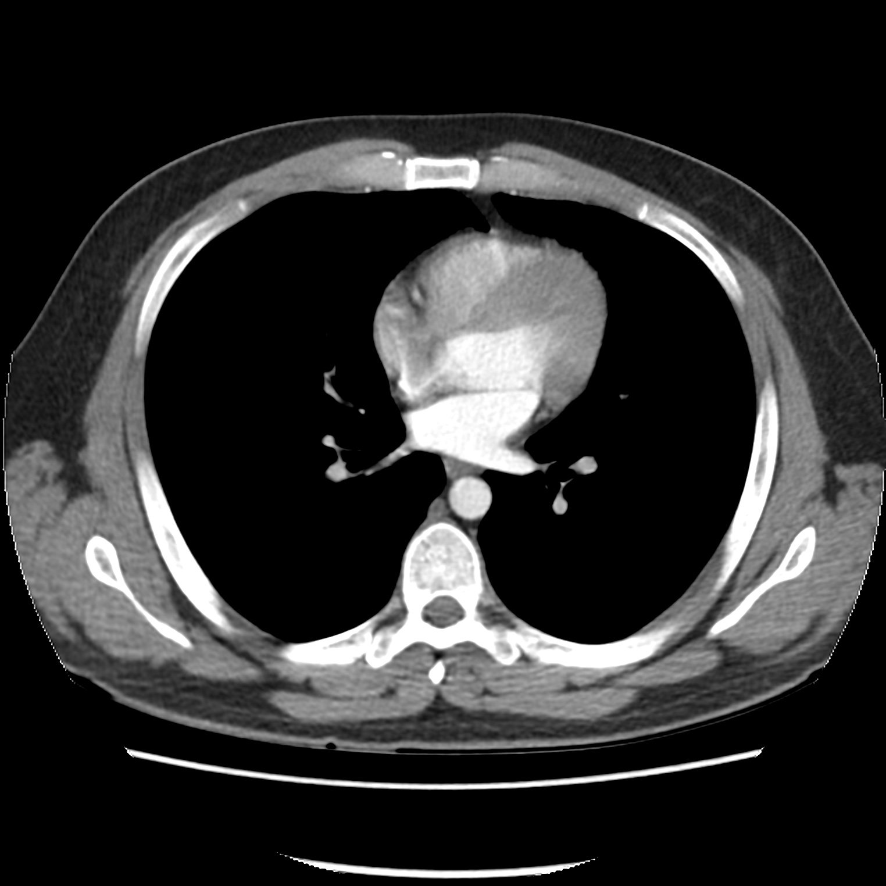

Normal chest CT (mediastinal window)مفراس صدر طبيعي (نافذة المنصف)Normal · الصورة الطبيعية
الحالة: مقطع محوري طبيعي للصدر بنافذة المنصف (mediastinal window) مع صبغة وريدية.
ما يُرى فيها: القلب والأوعية الكبيرة ممتلئة بالصبغة وبيضاء، والرئتان تظهران سوداوين في هذه النافذة، والحيّز الجنبي خالٍ من السائل.
الوضعية: Axial · C+ arterial phase